Contextualização e Objetivo
Duas formas de esperar antes de atacar.
Apresentação do programa interno de conscientização e resposta a incidentes da TechSecure S.A. Nosso objetivo é explicar e diferenciar ameaças baseadas em gatilhos condicionais e temporais, demonstrando seu funcionamento técnico, impactos e formas de mitigação.
Em uma frase: uma análise profunda sobre como códigos ocultos utilizam lógica de estado e tempo para disparar cargas destrutivas — e como os analistas de segurança podem neutralizá-los.
Bomba Lógica · Conceito e Histórico
Bomba Lógica (Logic Bomb / Slag Code)
Definição oficial: instrução ou código inserido intencionalmente em um software para disparar uma função maliciosa quando condições lógicas específicas forem atendidas.
Histórico e evolução
Surgiu no contexto de ameaças internas (insider threats). Historicamente utilizada por colaboradores ou administradores insatisfeitos com privilégios de acesso. Diferencia-se de vírus e worms por não possuir capacidade de autorreplicação.
Diferencial técnico
Não necessita de backdoor ativa nem de replicação; permanece oculta em código ou scripts legítimos, aguardando uma mudança de estado.

Bomba Lógica · Funcionamento, Caso e Defesa
Como ela executa
Mecanismo de execução
Verificação contínua ou condicional de variáveis de estado do sistema operacional — por exemplo, a remoção do nome do funcionário da base do RH, alteração de um registro, ou ausência de sinal do tipo Dead Man's Switch.
Impacto no sistema
Executa o payload — destruição de dados via sobrescrita ou corrupção de tabelas — com os privilégios da conta que rodou o processo.
Bomba Lógica · Estudo de Caso
Caso real
Roger Duronio
Administrador de sistemas insatisfeito com o bônus recebido implantou um código malicioso em cerca de 1.000 computadores da empresa. Disparado após sua demissão, o código apagou arquivos e causou prejuízos superiores a US$ 3 milhões.

Bomba Lógica · Estratégias de Defesa
Como se proteger
- Aplicação rigorosa do Princípio do Menor Privilégio (Least Privilege).
- Monitoramento de integridade de arquivos em binários e scripts, com ferramentas como Tripwire.
- Criação de baselines de processos conhecidos e auditoria contínua de acessos privilegiados.
Time Bomb · Conceito e Histórico
Time Bomb (Bomba Relógio)
Definição oficial: subcategoria de bomba lógica cujo gatilho é estritamente baseado no fator tempo.
Histórico e evolução
Evoluiu de antigos vírus que aguardavam datas específicas — como o WM/Theatre.A, programado para o dia 1º do mês — até rotinas agendadas em scripts de administração de rede.
Diferencial técnico
Utiliza o relógio do sistema (System Clock), contadores de tempo decorrido ou utilitários de agendamento de tarefas para disparar o payload.

Time Bomb · Funcionamento, Caso e Defesa
Como ela executa
Mecanismo de execução
Avaliação condicional de data/hora fixa, contagem regressiva de segundos, ou agendamento via Cron (Linux) / Task Scheduler (Windows).
Impacto no sistema
Ativação programada em momento de baixa vigilância — finais de semana ou madrugadas — para maximizar o impacto antes do início da resposta a incidentes.
Time Bomb · Estudo de Caso
Caso real
Rajendrasinh Makwana
Programador terceirizado, demitido em 24/10/2008, transmitiu um script malicioso configurado para executar em 31/01/2009. O código visava se propagar por cerca de 5.000 servidores e apagar todos os dados financeiros e operacionais — mas foi descoberto a tempo.
Time Bomb · Estratégias de Defesa
Como se proteger
- Auditoria frequente de agendadores de tarefas (Cron jobs e Task Scheduler).
- Armazenamento de backups isolados (off-site/offline), imunes ao relógio da rede.
- Testes de avanço/recuo de relógio em ambiente seguro de laboratório, para revelar gatilhos ocultos.
Comparação Direta
Bomba Lógica × Time Bomb
| Bomba Lógica | Time Bomb | |
|---|---|---|
| Gatilho principal | Evento ou mudança de estado (ex: banco de dados, arquivo, registro) | Data, hora, tempo decorrido ou contador |
| Dependência do relógio | Não depende do relógio do sistema operacional | Alta — lê o System Clock ou contador próprio |
| Geração de log de tempo | Assíncrona ao tempo; associada a ações/eventos do usuário | Sincronizada com o horário programado de disparo |
| Mapeamento em agendadores | Geralmente oculta em rotinas do próprio código ou da aplicação | Frequentemente abusa de utilitários nativos (Cron / Task Scheduler) |
| Evasão de análise | Complexa — só altera o comportamento se a condição for verdadeira | Pode ser detectada avançando artificialmente o relógio do sistema em sandbox |
Análise Visual e Processo de Neutralização
Do gatilho à contenção
Processo de difusão (baseado em metodologia SANS)
- Isolar o host da rede.
- Preservar evidências forenses antes de alterar o estado do sistema.
- Restaurar o ambiente em laboratório isolado.
- Validar que o backup não contém o gatilho nem o código dormente.
- Testar manipulando o relógio do sistema e analisando chamadas de sistema (diffusing).
- Restaurar o serviço de forma monitorada.
Conclusão + Desafio do Analista
Conclusão
Ameaças com gatilhos exigem uma estratégia de defesa em profundidade que vá além da detecção de assinaturas de malware — focando na integridade de arquivos, gestão de acessos e rigor com ex-colaboradores.
Desafio do Analista
Na TechSecure S.A., após a demissão de um engenheiro, os servidores de banco de dados pararam de responder exatamente às 02h00 do domingo seguinte, sem nenhuma alteração nos registros de usuários no dia. Qual foi a ameaça responsável?
Revelar resposta
Time Bomb — disparo agendado baseado em data/hora fixa (agendador), e não por verificação de estado em tempo real.